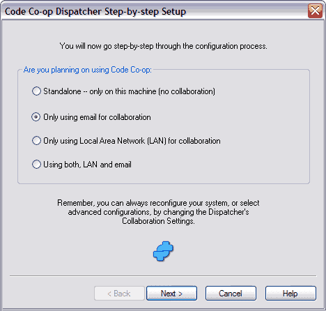

First, you have to decide how your Code Co-op will communicate with others.
To start Code Co-op configuration right now, click this button:
The most common and recommended setting is Only using e-mail for collaboration, which will configure your computer as an e-mail peer.
You may select "Standalone" if you are not ready to collaborate with others yet. It's easy to reconfigure Code Co-op later.
LAN configurations are only available in version Pro of Code Co-op. Here, it's important to know if you are joining an existing group of collaborators or you are starting from scratch.
